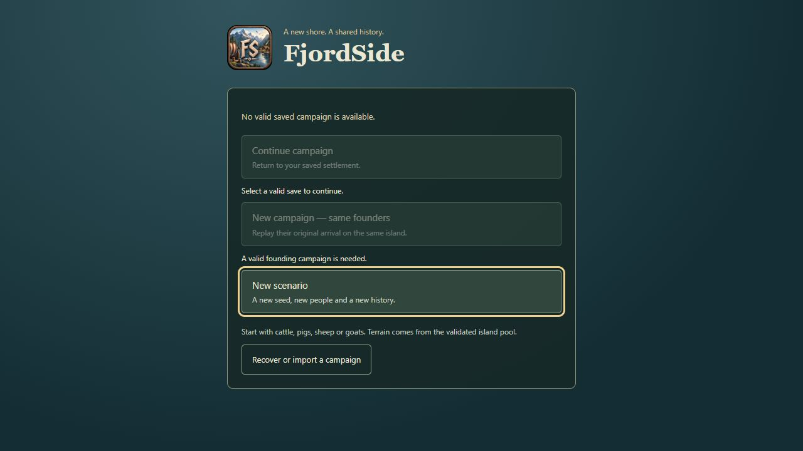
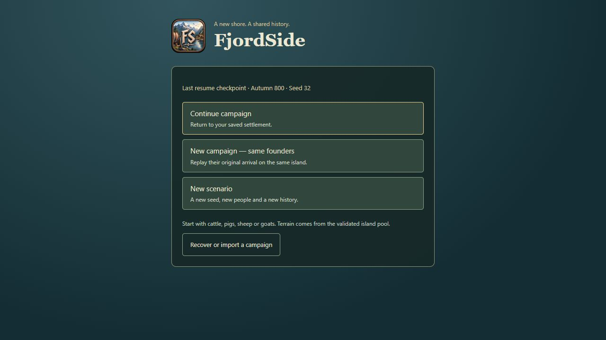
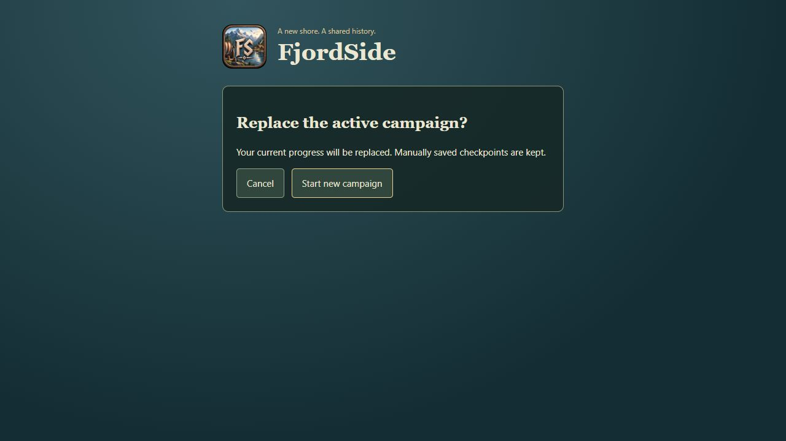
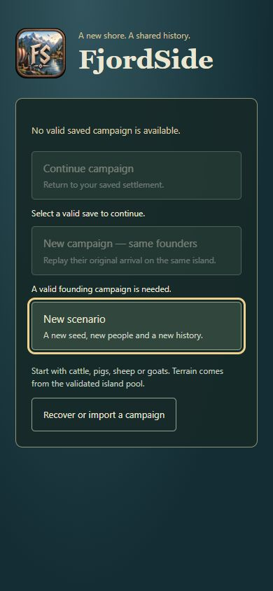
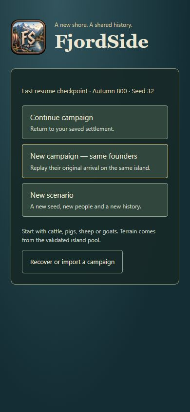
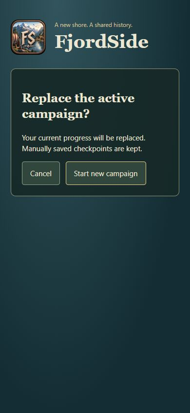
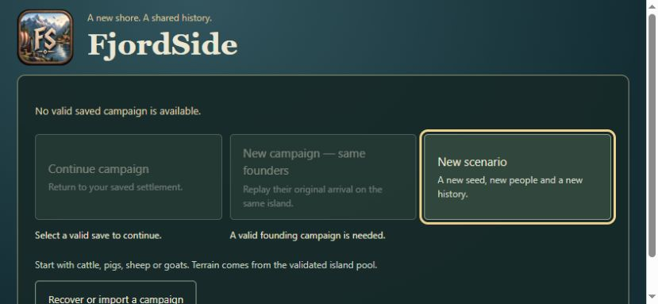
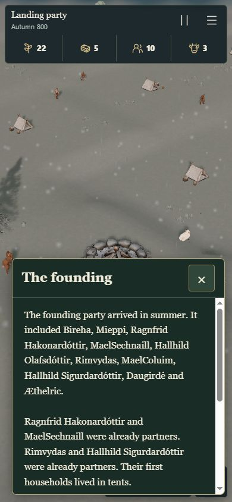
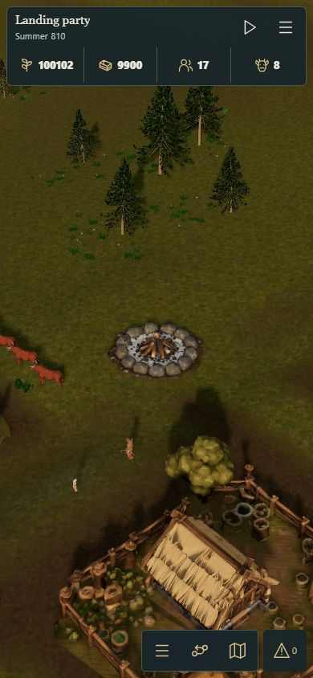

Choose before the island loads: Continue campaign, replay the same founders, or start a New scenario.
New scenarios roll cattle, pigs, sheep or goats. They use the existing validated terrain pool, so species and islands may repeat.
Open the normal start menu · Recorded observations · Validation notes
First visit, saved campaign and cancellation were observed with no workers, WebGL, model requests or save changes. Loading begins after an explicit choice. Phone images are desktop-engine viewport emulation; they are not physical Safari tests.








